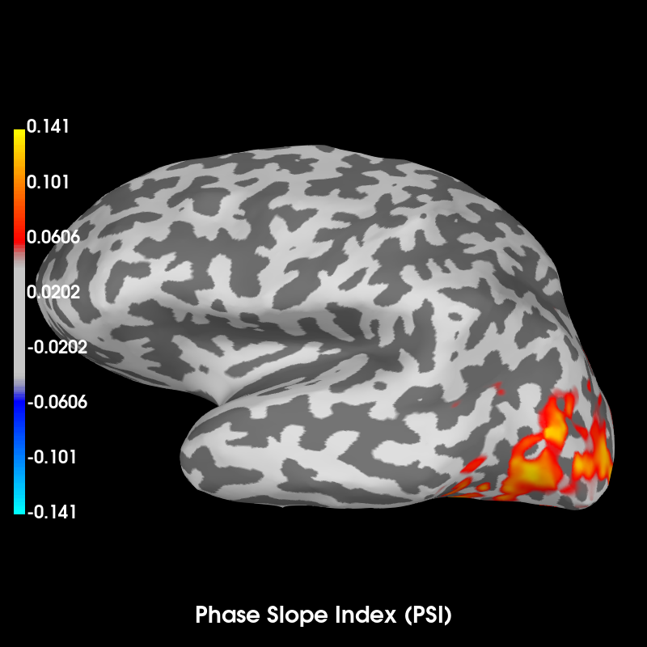

This example demonstrates how the Phase Slope Index (PSI) [1] can be computed in source space based on single trial dSPM source estimates. In addition, the example shows advanced usage of the connectivity estimation routines by first extracting a label time course for each epoch and then combining the label time course with the single trial source estimates to compute the connectivity.
The result clearly shows how the activity in the visual label precedes more widespread activity (a postivive PSI means the label time course is leading).
[1] Nolte et al. “Robustly Estimating the Flow Direction of Information in Complex Physical Systems”, Physical Review Letters, vol. 100, no. 23, pp. 1-4, Jun. 2008.
Out:
Reading inverse operator decomposition from /home/ubuntu/mne_data/MNE-sample-data/MEG/sample/sample_audvis-meg-oct-6-meg-inv.fif...
Reading inverse operator info...
[done]
Reading inverse operator decomposition...
[done]
305 x 305 full covariance (kind = 1) found.
Read a total of 4 projection items:
PCA-v1 (1 x 102) active
PCA-v2 (1 x 102) active
PCA-v3 (1 x 102) active
Average EEG reference (1 x 60) active
Noise covariance matrix read.
22494 x 22494 diagonal covariance (kind = 2) found.
Source covariance matrix read.
22494 x 22494 diagonal covariance (kind = 6) found.
Orientation priors read.
22494 x 22494 diagonal covariance (kind = 5) found.
Depth priors read.
Did not find the desired covariance matrix (kind = 3)
Reading a source space...
Computing patch statistics...
Patch information added...
Distance information added...
[done]
Reading a source space...
Computing patch statistics...
Patch information added...
Distance information added...
[done]
2 source spaces read
Read a total of 4 projection items:
PCA-v1 (1 x 102) active
PCA-v2 (1 x 102) active
PCA-v3 (1 x 102) active
Average EEG reference (1 x 60) active
Source spaces transformed to the inverse solution coordinate frame
Opening raw data file /home/ubuntu/mne_data/MNE-sample-data/MEG/sample/sample_audvis_filt-0-40_raw.fif...
Read a total of 4 projection items:
PCA-v1 (1 x 102) idle
PCA-v2 (1 x 102) idle
PCA-v3 (1 x 102) idle
Average EEG reference (1 x 60) idle
Range : 6450 ... 48149 = 42.956 ... 320.665 secs
Ready.
Current compensation grade : 0
70 matching events found
Created an SSP operator (subspace dimension = 3)
4 projection items activated
Preparing the inverse operator for use...
Scaled noise and source covariance from nave = 1 to nave = 1
Created the regularized inverter
Created an SSP operator (subspace dimension = 3)
Created the whitener using a full noise covariance matrix (3 small eigenvalues omitted)
Computing noise-normalization factors (dSPM)...
[done]
Picked 305 channels from the data
Computing inverse...
(eigenleads need to be weighted)...
Processing epoch : 1
Processing epoch : 2
Processing epoch : 3
Processing epoch : 4
Processing epoch : 5
Processing epoch : 6
Processing epoch : 7
Rejecting epoch based on EOG : [u'EOG 061']
Processing epoch : 8
Processing epoch : 9
Processing epoch : 10
Processing epoch : 11
Rejecting epoch based on EOG : [u'EOG 061']
Processing epoch : 12
Processing epoch : 13
Processing epoch : 14
Processing epoch : 15
Rejecting epoch based on EOG : [u'EOG 061']
Processing epoch : 16
Processing epoch : 17
Processing epoch : 18
Processing epoch : 19
Processing epoch : 20
Processing epoch : 21
Processing epoch : 22
Processing epoch : 23
Processing epoch : 24
Processing epoch : 25
Processing epoch : 26
Processing epoch : 27
Processing epoch : 28
Processing epoch : 29
Rejecting epoch based on EOG : [u'EOG 061']
Processing epoch : 30
Processing epoch : 31
Processing epoch : 32
Processing epoch : 33
Processing epoch : 34
Processing epoch : 35
Processing epoch : 36
Rejecting epoch based on EOG : [u'EOG 061']
Processing epoch : 37
Processing epoch : 38
Processing epoch : 39
Processing epoch : 40
Rejecting epoch based on EOG : [u'EOG 061']
Processing epoch : 41
Rejecting epoch based on EOG : [u'EOG 061']
Processing epoch : 42
Processing epoch : 43
Processing epoch : 44
Processing epoch : 45
Processing epoch : 46
Processing epoch : 47
Rejecting epoch based on EOG : [u'EOG 061']
Processing epoch : 48
Processing epoch : 49
Processing epoch : 50
Processing epoch : 51
Processing epoch : 52
Rejecting epoch based on EOG : [u'EOG 061']
Rejecting epoch based on EOG : [u'EOG 061']
Processing epoch : 53
Processing epoch : 54
Processing epoch : 55
Processing epoch : 56
Processing epoch : 57
Processing epoch : 58
Processing epoch : 59
Processing epoch : 60
[done]
Extracting time courses for 1 labels (mode: mean_flip)
Extracting time courses for 1 labels (mode: mean_flip)
Extracting time courses for 1 labels (mode: mean_flip)
Extracting time courses for 1 labels (mode: mean_flip)
Extracting time courses for 1 labels (mode: mean_flip)
Extracting time courses for 1 labels (mode: mean_flip)
Extracting time courses for 1 labels (mode: mean_flip)
Extracting time courses for 1 labels (mode: mean_flip)
Extracting time courses for 1 labels (mode: mean_flip)
Extracting time courses for 1 labels (mode: mean_flip)
Extracting time courses for 1 labels (mode: mean_flip)
Extracting time courses for 1 labels (mode: mean_flip)
Extracting time courses for 1 labels (mode: mean_flip)
Extracting time courses for 1 labels (mode: mean_flip)
Extracting time courses for 1 labels (mode: mean_flip)
Extracting time courses for 1 labels (mode: mean_flip)
Extracting time courses for 1 labels (mode: mean_flip)
Extracting time courses for 1 labels (mode: mean_flip)
Extracting time courses for 1 labels (mode: mean_flip)
Extracting time courses for 1 labels (mode: mean_flip)
Extracting time courses for 1 labels (mode: mean_flip)
Extracting time courses for 1 labels (mode: mean_flip)
Extracting time courses for 1 labels (mode: mean_flip)
Extracting time courses for 1 labels (mode: mean_flip)
Extracting time courses for 1 labels (mode: mean_flip)
Extracting time courses for 1 labels (mode: mean_flip)
Extracting time courses for 1 labels (mode: mean_flip)
Extracting time courses for 1 labels (mode: mean_flip)
Extracting time courses for 1 labels (mode: mean_flip)
Extracting time courses for 1 labels (mode: mean_flip)
Extracting time courses for 1 labels (mode: mean_flip)
Extracting time courses for 1 labels (mode: mean_flip)
Extracting time courses for 1 labels (mode: mean_flip)
Extracting time courses for 1 labels (mode: mean_flip)
Extracting time courses for 1 labels (mode: mean_flip)
Extracting time courses for 1 labels (mode: mean_flip)
Extracting time courses for 1 labels (mode: mean_flip)
Extracting time courses for 1 labels (mode: mean_flip)
Extracting time courses for 1 labels (mode: mean_flip)
Extracting time courses for 1 labels (mode: mean_flip)
Extracting time courses for 1 labels (mode: mean_flip)
Extracting time courses for 1 labels (mode: mean_flip)
Extracting time courses for 1 labels (mode: mean_flip)
Extracting time courses for 1 labels (mode: mean_flip)
Extracting time courses for 1 labels (mode: mean_flip)
Extracting time courses for 1 labels (mode: mean_flip)
Extracting time courses for 1 labels (mode: mean_flip)
Extracting time courses for 1 labels (mode: mean_flip)
Extracting time courses for 1 labels (mode: mean_flip)
Extracting time courses for 1 labels (mode: mean_flip)
Extracting time courses for 1 labels (mode: mean_flip)
Extracting time courses for 1 labels (mode: mean_flip)
Extracting time courses for 1 labels (mode: mean_flip)
Extracting time courses for 1 labels (mode: mean_flip)
Extracting time courses for 1 labels (mode: mean_flip)
Extracting time courses for 1 labels (mode: mean_flip)
Extracting time courses for 1 labels (mode: mean_flip)
Extracting time courses for 1 labels (mode: mean_flip)
Extracting time courses for 1 labels (mode: mean_flip)
Extracting time courses for 1 labels (mode: mean_flip)
Estimating phase slope index (PSI)
Connectivity computation...
computing connectivity for 7498 connections
using t=0.000s..0.300s for estimation (46 points)
fmin corresponds to less than 5 cycles, spectrum estimate will be unreliable
frequencies: 9.8Hz..29.4Hz (7 points)
using multitaper spectrum estimation with 7 DPSS windows
the following metrics will be computed: Coherency
computing connectivity for epoch 1
Performance can be improved by not accessing the data attribute before calling this method.
computing connectivity for epoch 2
Performance can be improved by not accessing the data attribute before calling this method.
computing connectivity for epoch 3
Performance can be improved by not accessing the data attribute before calling this method.
computing connectivity for epoch 4
Performance can be improved by not accessing the data attribute before calling this method.
computing connectivity for epoch 5
Performance can be improved by not accessing the data attribute before calling this method.
computing connectivity for epoch 6
Performance can be improved by not accessing the data attribute before calling this method.
computing connectivity for epoch 7
Performance can be improved by not accessing the data attribute before calling this method.
computing connectivity for epoch 8
Performance can be improved by not accessing the data attribute before calling this method.
computing connectivity for epoch 9
Performance can be improved by not accessing the data attribute before calling this method.
computing connectivity for epoch 10
Performance can be improved by not accessing the data attribute before calling this method.
computing connectivity for epoch 11
Performance can be improved by not accessing the data attribute before calling this method.
computing connectivity for epoch 12
Performance can be improved by not accessing the data attribute before calling this method.
computing connectivity for epoch 13
Performance can be improved by not accessing the data attribute before calling this method.
computing connectivity for epoch 14
Performance can be improved by not accessing the data attribute before calling this method.
computing connectivity for epoch 15
Performance can be improved by not accessing the data attribute before calling this method.
computing connectivity for epoch 16
Performance can be improved by not accessing the data attribute before calling this method.
computing connectivity for epoch 17
Performance can be improved by not accessing the data attribute before calling this method.
computing connectivity for epoch 18
Performance can be improved by not accessing the data attribute before calling this method.
computing connectivity for epoch 19
Performance can be improved by not accessing the data attribute before calling this method.
computing connectivity for epoch 20
Performance can be improved by not accessing the data attribute before calling this method.
computing connectivity for epoch 21
Performance can be improved by not accessing the data attribute before calling this method.
computing connectivity for epoch 22
Performance can be improved by not accessing the data attribute before calling this method.
computing connectivity for epoch 23
Performance can be improved by not accessing the data attribute before calling this method.
computing connectivity for epoch 24
Performance can be improved by not accessing the data attribute before calling this method.
computing connectivity for epoch 25
Performance can be improved by not accessing the data attribute before calling this method.
computing connectivity for epoch 26
Performance can be improved by not accessing the data attribute before calling this method.
computing connectivity for epoch 27
Performance can be improved by not accessing the data attribute before calling this method.
computing connectivity for epoch 28
Performance can be improved by not accessing the data attribute before calling this method.
computing connectivity for epoch 29
Performance can be improved by not accessing the data attribute before calling this method.
computing connectivity for epoch 30
Performance can be improved by not accessing the data attribute before calling this method.
computing connectivity for epoch 31
Performance can be improved by not accessing the data attribute before calling this method.
computing connectivity for epoch 32
Performance can be improved by not accessing the data attribute before calling this method.
computing connectivity for epoch 33
Performance can be improved by not accessing the data attribute before calling this method.
computing connectivity for epoch 34
Performance can be improved by not accessing the data attribute before calling this method.
computing connectivity for epoch 35
Performance can be improved by not accessing the data attribute before calling this method.
computing connectivity for epoch 36
Performance can be improved by not accessing the data attribute before calling this method.
computing connectivity for epoch 37
Performance can be improved by not accessing the data attribute before calling this method.
computing connectivity for epoch 38
Performance can be improved by not accessing the data attribute before calling this method.
computing connectivity for epoch 39
Performance can be improved by not accessing the data attribute before calling this method.
computing connectivity for epoch 40
Performance can be improved by not accessing the data attribute before calling this method.
computing connectivity for epoch 41
Performance can be improved by not accessing the data attribute before calling this method.
computing connectivity for epoch 42
Performance can be improved by not accessing the data attribute before calling this method.
computing connectivity for epoch 43
Performance can be improved by not accessing the data attribute before calling this method.
computing connectivity for epoch 44
Performance can be improved by not accessing the data attribute before calling this method.
computing connectivity for epoch 45
Performance can be improved by not accessing the data attribute before calling this method.
computing connectivity for epoch 46
Performance can be improved by not accessing the data attribute before calling this method.
computing connectivity for epoch 47
Performance can be improved by not accessing the data attribute before calling this method.
computing connectivity for epoch 48
Performance can be improved by not accessing the data attribute before calling this method.
computing connectivity for epoch 49
Performance can be improved by not accessing the data attribute before calling this method.
computing connectivity for epoch 50
Performance can be improved by not accessing the data attribute before calling this method.
computing connectivity for epoch 51
Performance can be improved by not accessing the data attribute before calling this method.
computing connectivity for epoch 52
Performance can be improved by not accessing the data attribute before calling this method.
computing connectivity for epoch 53
Performance can be improved by not accessing the data attribute before calling this method.
computing connectivity for epoch 54
Performance can be improved by not accessing the data attribute before calling this method.
computing connectivity for epoch 55
Performance can be improved by not accessing the data attribute before calling this method.
computing connectivity for epoch 56
Performance can be improved by not accessing the data attribute before calling this method.
computing connectivity for epoch 57
Performance can be improved by not accessing the data attribute before calling this method.
computing connectivity for epoch 58
Performance can be improved by not accessing the data attribute before calling this method.
computing connectivity for epoch 59
Performance can be improved by not accessing the data attribute before calling this method.
computing connectivity for epoch 60
Performance can be improved by not accessing the data attribute before calling this method.
[Connectivity computation done]
Computing PSI from estimated Coherency
[PSI Estimation Done]
Updating smoothing matrix, be patient..
Smoothing matrix creation, step 1
Smoothing matrix creation, step 2
Smoothing matrix creation, step 3
Smoothing matrix creation, step 4
Smoothing matrix creation, step 5
Smoothing matrix creation, step 6
Smoothing matrix creation, step 7
Smoothing matrix creation, step 8
Smoothing matrix creation, step 9
Smoothing matrix creation, step 10
colormap: fmin=-2.33e-01 fmid=0.00e+00 fmax=2.33e-01 transparent=0
# Author: Martin Luessi <mluessi@nmr.mgh.harvard.edu>
#
# License: BSD (3-clause)
import numpy as np
import mne
from mne.datasets import sample
from mne.minimum_norm import read_inverse_operator, apply_inverse_epochs
from mne.connectivity import seed_target_indices, phase_slope_index
print(__doc__)
data_path = sample.data_path()
subjects_dir = data_path + '/subjects'
fname_inv = data_path + '/MEG/sample/sample_audvis-meg-oct-6-meg-inv.fif'
fname_raw = data_path + '/MEG/sample/sample_audvis_filt-0-40_raw.fif'
fname_event = data_path + '/MEG/sample/sample_audvis_filt-0-40_raw-eve.fif'
fname_label = data_path + '/MEG/sample/labels/Vis-lh.label'
event_id, tmin, tmax = 4, -0.2, 0.3
method = "dSPM" # use dSPM method (could also be MNE or sLORETA)
# Load data
inverse_operator = read_inverse_operator(fname_inv)
raw = mne.io.read_raw_fif(fname_raw)
events = mne.read_events(fname_event)
# pick MEG channels
picks = mne.pick_types(raw.info, meg=True, eeg=False, stim=False, eog=True,
exclude='bads')
# Read epochs
epochs = mne.Epochs(raw, events, event_id, tmin, tmax, picks=picks,
baseline=(None, 0), reject=dict(mag=4e-12, grad=4000e-13,
eog=150e-6))
# Compute inverse solution and for each epoch. Note that since we are passing
# the output to both extract_label_time_course and the phase_slope_index
# functions, we have to use "return_generator=False", since it is only possible
# to iterate over generators once.
snr = 1.0 # use lower SNR for single epochs
lambda2 = 1.0 / snr ** 2
stcs = apply_inverse_epochs(epochs, inverse_operator, lambda2, method,
pick_ori="normal", return_generator=False)
# Now, we generate seed time series by averaging the activity in the left
# visual corex
label = mne.read_label(fname_label)
src = inverse_operator['src'] # the source space used
seed_ts = mne.extract_label_time_course(stcs, label, src, mode='mean_flip')
# Combine the seed time course with the source estimates. There will be a total
# of 7500 signals:
# index 0: time course extracted from label
# index 1..7499: dSPM source space time courses
comb_ts = zip(seed_ts, stcs)
# Construct indices to estimate connectivity between the label time course
# and all source space time courses
vertices = [src[i]['vertno'] for i in range(2)]
n_signals_tot = 1 + len(vertices[0]) + len(vertices[1])
indices = seed_target_indices([0], np.arange(1, n_signals_tot))
# Compute the PSI in the frequency range 8Hz..30Hz. We exclude the baseline
# period from the connectivity estimation
fmin = 8.
fmax = 30.
tmin_con = 0.
sfreq = raw.info['sfreq'] # the sampling frequency
psi, freqs, times, n_epochs, _ = phase_slope_index(
comb_ts, mode='multitaper', indices=indices, sfreq=sfreq,
fmin=fmin, fmax=fmax, tmin=tmin_con)
# Generate a SourceEstimate with the PSI. This is simple since we used a single
# seed (inspect the indices variable to see how the PSI scores are arranged in
# the output)
psi_stc = mne.SourceEstimate(psi, vertices=vertices, tmin=0, tstep=1,
subject='sample')
# Now we can visualize the PSI using the plot method. We use a custom colormap
# to show signed values
v_max = np.max(np.abs(psi))
brain = psi_stc.plot(surface='inflated', hemi='lh',
time_label='Phase Slope Index (PSI)',
subjects_dir=subjects_dir,
clim=dict(kind='percent', pos_lims=(95, 97.5, 100)))
brain.show_view('medial')
brain.add_label(fname_label, color='green', alpha=0.7)
Total running time of the script: ( 0 minutes 33.576 seconds)